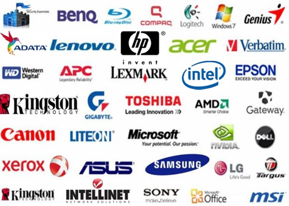

Tienda Informática E-NetBeans

Durante nuestra experiencia nos hemos convertido en una alternativa real a las diferentes soluciones corporativas como consultores en tecnología para los negocios sobre el mejor hardware que hará que su empresa aumente su productividad y disminuya los costos obteniendo el beneficio de la gran mayoría de las funcionalidades de equipos de todas las capacidades y marcas, siendo éstos acordes a cada una de sus necesidades.
Ofrecemos equipos de cómputo y productos de las marcas líderes en el mercado.

Podemos ofrecerle todo tipo de equipo de cómputo, ya sea:
- Computadoras de escritorio
- Computadoras portátiles Laptops
- Servidores
- Dispositivos de almacenamiento
- Tablets
- Workstation’s
- Impresoras
- Multifuncionales
- Pantallas de TV
- Dispositivos de video
- Video-proyectores
- Equipos para redes
- Consumibles